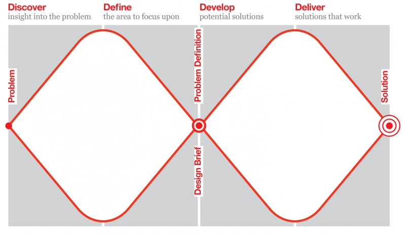

Carebot
A smartwatch health chatbot

My Role(s)
UX/UI Designer
External Links
Figma Protoype
Introduction
Carebot is a virtual chatbot that is designed to provide quality healthcare to people 24/7. It reduces the medical costs of annual checkups as well as travel
costs, as it is accessed through a smartwatch.
This project utilizes the Double-Diamond method, in which there are four main stages of a project's design process. The Discover stage is where we gather insights
into the project. The Define stage is where we refine our research and identify the project scope. The Develop stage is where we design possible solutions for the
problem scope. Finally, the Deliver stage is where we propose the finalized designs.

The Double Diamond Method. Image from Medium.
Discover
Problem Statement
How might we provide people without health insurance a convenient way to monitor their physical health issues and connect them to doctors and nurses through the use of a chat system in a smartwatch?
Research Insight Summary
How does a smart watch track a user’s health?
Smart watches have revolutionized how people track their health. Using sensors located underneath, a smart watch can record a user’s heart rate, physical
activity, sleep patterns, and even stress levels (Beh). These features are being tracked constantly, and the smartwatch will notify the user if any abnormal
measurements are recorded.
How are people without health insurance disadvantaged when it comes to health care?
The National Library of Medicine published an article in 2007 that depicts the irony of medical costs for the uninsured. Research shows that people without
health insurance are more likely to have higher medical costs out-of-pocket (Davis). This prevents them from getting the care they need, resulting in a decrease
in the overall health of these populations.
How can chatbots be used for self-diagnosis?
While it is helpful to search up symptoms online and receive a possible diagnosis, it is often inaccurate and not tailored to the individual. Chatbots are a great
way to receive medical information accessible. With the advancements of AI, chatbots can provide medical advice to users and track their health without the need of
a medical professional (Fan).
How can healthcare be more accessible?
There are many factors that would make healthcare inaccessible, one of which is long travel distances. Efforts are being made to reduce the transportation by
providing healthcare virtually through mobile devices (Rodriguez-Villa). This eliminates the inconvenience of traveling and still provides people with reliable
healthcare in the comfort of their homes.
Product Sketches
The majority of the functions a smart watch can perform is through heart rate detection. Thus, the design needed to be able to read a user’s pulse to provide diagnosis.
Additionally, the product would need to have an led screen to display chat messages. It would need to be big enough for the user to interact with and be portable (smart
watch or mobile phone).
Low-fidelity sketches of Carebot
Define
User Empathy Map
User Empathy Map - Center image from Unsplash
Pains: Still wary about new technology. Hard to select options on a small screen.
Gains: Can receive care and guidance at any time or place. Feels relieved for the convenience of care.
Jobs-to-be-Done Framework
The main job to be done with Carebot is to make healthcare accessible to users. The related job to be done is to have users engage with a chat system. Users can list out
their symptoms and the chat can reply back with a diagnosis.
Jobs-to-be-Done Framework
Develop
Wizard-of-Oz
Here's my Wizard-of-Oz video that depicts the proof-of-concept for this project using a paper prototype. I then used this concept to create my Figma prototype. You can view
the Figma prototype at the top of this page, or through
here.
A Wizard-of-Oz (WOZ) is a mockup of a user interface that's controlled by a human. The goal of it is to narrow down the problem space and to test concepts more
directly with users in an inexpenxive way.
References
Beh, Phaik Khee, et al. “Using Smartwatches for Fitness and Health Monitoring: The UTAUT2
Combined with Threat Appraisal as Moderators.” Behaviour & Information Technology, vol. 40, no. 3, 19 Nov. 2019, pp. 282–299., https://doi.org/10.1080/0144929x.2019.1685597.
Davis, Karen. “Uninsured in America: Problems and Possible Solutions.” BMJ, vol. 334, no. 7589, 7 Feb. 2007,
pp. 346–348., https://doi.org/10.1136/bmj.39091.493588.be.
Fan, Xiangmin, et al. “Utilization of Self-Diagnosis Health Chatbots in Real-World Settings: Case
Study.” Journal of Medical Internet Research, vol. 23, no. 1, 6 Jan. 2021, https://doi.org/10.219 6/19928.
Rodriguez-Villa, Elena, et al. “Making Mental Health More Accessible in Light of COVID-19: Scalable
Digital Health with Digital Navigators in Low and Middle-Income Countries.” Asian Journal of Psychiatry, vol. 54, Dec. 2020, https://doi.org/10.1016/j.ajp.2020.102433.
Aditi Kisara